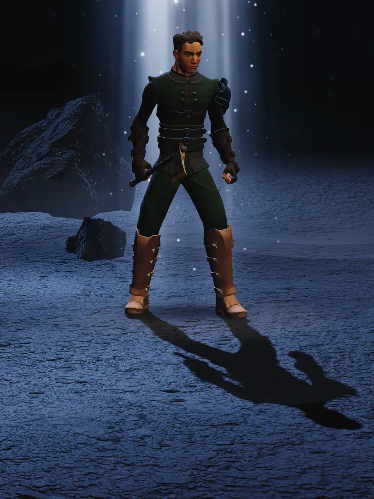
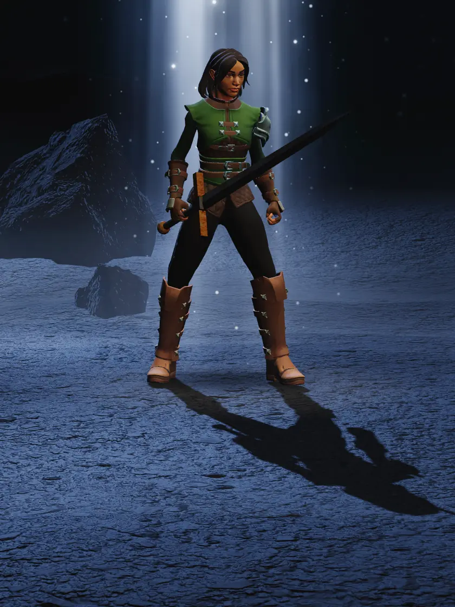
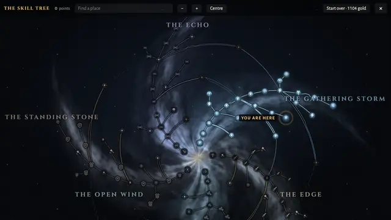
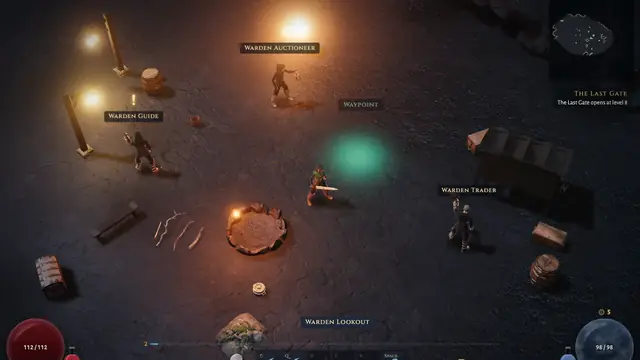

싸우고, 줍고, 레벨 업
클릭으로 이동하고 휘두르거나, 휴대폰에서는 터치로. 몬스터는 무작위 옵션이 붙은 골드와 장비를 떨어뜨린다. 더 좋은 쪽을 입어라. 레벨마다 스킬 트리 포인트가 하나씩.


무료 얼리 알파
브라우저에서 바로 즐기는 핵앤슬래시 액션 RPG. 폭풍이 남긴 것과 싸우고, 떨어진 것을 주워, 나만의 영웅을 키워라.
컴퓨터든 휴대폰이든 브라우저에서. 다운로드도 계정도 필요 없다.
0명 플레이 중
클릭으로 이동하고 휘두르거나, 휴대폰에서는 터치로. 몬스터는 무작위 옵션이 붙은 골드와 장비를 떨어뜨린다. 더 좋은 쪽을 입어라. 레벨마다 스킬 트리 포인트가 하나씩.

포인트를 스킬 트리에 써라. 어떤 장소는 스킬의 작동을 바꾼다. 베기는 회전이 되고, 번갯불은 갈라진다. 플레이어 안내서가 다섯 빌드를 게임에서 잰 숫자와 함께 안내한다.

은신처에는 상인과 보관함, 웨이포인트가 있다.
다른 플레이어들도 그곳에 함께 선다. 채팅으로 이야기하고, 서로 거래하고, 경매장에서 사고팔아라.
지금 있는 것: 깨어나는 하얀 안개. 밤의 폭풍 아래 검은 기슭, 시간의 전당. 전당 옆의 은신처. 그리고 심판자가 기다리는 최후의 문. 고를 수 있는 두 영웅, 스킬 트리, 구르기, 생명력·마나 약병, 옵션과 레벨이 붙은 전리품.
대부분의 날 새것이 오고, 어떤 날은 무언가 부서진다. 진행은 플레이하는 동안 저절로 저장된다. 알파 기간에는 초기화될 수 있다.
어땠는지 알려 달라. 일시정지 메뉴의 의견 보내기는 언제든 열려 있다.
원작 게임은 MIT 라이선스의 오픈 소스다. GitHub에서 코드를 읽을 수 있다. 모델과 애니메이션, 텍스처는 에셋 크레딧에 정리된 자유 라이브러리에서 왔다.
무료 플레이